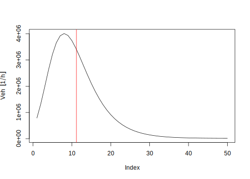

Chapter 4 Traffic data
Traffic data is read in VEIN as spatial information. In other words, traffic data must be in any vectorial line spatial format with the drivers provided by the library GDAL (http://www.gdal.org/ogr_formats.html), which is called by the packages rgdal or sf. This means that traffic data must be in in any GDAL spatial format. The Eq. (4.1) shows how traffic data is treated in VEIN.
\[\begin{equation} F^*_{i,j,k} = Q_{i} \cdot VC_{i,j} \cdot Age_{j,k} \tag{4.1} \end{equation}\]where \(F^*_{i,j,k}\) is the vehicular flow at street link \(i\) for vehicle type \(j\) by age of use \(k\). \(j\) defines the vehicular composition according to its type of use, type of fuel, size of engine and gross weight, based on definitions of (Corvalán, Osses, and Urrutia 2002). \(Q_i\) is the traffic flow at street link \(i\). \(VC_{i,j}\) is the fraction of vehicles varying according to the type of vehicles \(j\) in the vehicle fleet at street link \(i\). \(Age_{j,k}\) is the age distribution by vehicular composition \(j\) and age of use \(k\).
This Equation shows that \(VC\) splits the total vehicular flow \(Q\) to identify the vehicular fraction, which varies according to the type of fuel, size of motor and gross weight. For example, if \(Q\) is light duty vehicles (LDV) and it is known that 5% of the \(Q\) are passenger cars (PC), with engines lesser than 1400 cc, \(VC\) is 0.05. This characterization of the fleet depends on the amount and quality of the available information. VEIN then multiplies the traffic with \(Age\) to obtain the amount of each type of vehicle by age of use.
4.1 Sources of traffic data
4.1.1 Travel demand outputs
VEIN was developepd according to the available traffic data in São Pauo, Brazil. In this case, the available data was a 4-stage macroscopic travel model for morning rush hours and hourly traffic counts for morning and evening rush hours. The travel model is based on data from an Origin-Destination-Survey (ODS) (Metro 2017) which started in the decade of 1950 in São Paulo. A classic reference of a 4-stage modeling transport is (Ortuzar and Willumsen 2002). The 4 stages of the traffic modeling include characterization of trip attractions and productions by zone in some regions, distribution of these trips, the preferred mode of transport for traveling and finally the allocation of the trips at each mode; in this case into the road network. The ODS is made every 10 years by Metro (http://www.metro.sp.gov.br/), which is the underground company, and they perform a smaller update of ODS after 5 years. The information gathered in the ODS is massive due to participation of thousands of commuters. It helps to identify characteristics of the trips inside MASP. CET uses the information from ODS and performs the traffic simulation. In this case, it is a macro or strategic traffic simulation which represents the equilibrium between offer and supply of transportation at maximum load of the road network, that is, at the rush hour, which is from 08:00 to 09:00 Local Time (LT).
VEIN incorporates an extract of a traffic model simulation for the west part of São Paulo named net. The Fig. (4.1 shows the traffic of Light Duty Vehicles (LDV). This data covers the surrounding area of the University of São Paulo. The information obtained from CET consists in:
- ldv: Light Duty Vehicles (1/h).
- hdv: Heavy Duty Vehicles (1/h).
- lkm: Length of the link (km).
- ps: Peak Speed (km/h).
- ffs: Free Flow Speed (km/h).
- tstreet: Type of street.
- lanes: Number of lanes per link.
- capacity: Capacity of vehicles in each link (1/h).
- tmin: Time for travelling each link (min).
The following scripts show how to load this data in R. This data has the class “SpatialLinesDataFrame” from the package (Pebesma and Bivand 2005). This data was converted into an spatial feature “sf” object (Pebesma 2017) because it consists of a data-frame with a list-column of geometry with the spatial attributes and it is easier to handle than an sp object class. As mentioned, future versions of VEIN will migrate to sf.
The user must call the library VEIN first, then load the data net. The object net has the class “SpatialLinesDataFrame”. This data can be loaded and shown in R like this:
library(vein)
library(sp)
data(net)
class(net)## [1] "SpatialLinesDataFrame"
## attr(,"package")
## [1] "sp"The Fig. (4.1) shows that traffic is concentrated in main streets such as the motorway Marginal Pinheiros, located in the north east part of the area.
library(vein)
data(net)
net$ldv <- as.numeric(net$ldv)
spplot(net, "ldv", scales = list(draw = T),
col.regions = rev(bpy.colors(16)))Figure 4.1: LDV at 08:00-09:00 (LT) in west São Paulo
4.1.2 Inteprolation of traffic counts
Travel model simulations are not always available and the user interested in estimating vehicular emisisons with a bottom-up approach would have to look for alternatives to obtain traffic data at street level. These alternatives cover interpolating traffic data for different temporal resolutions. For instance, Réquia Jr, Koutrakis, and Roig (2015) developed a vehicular bottom-up inventory using traffic counts and a geostatistic method called Global Moran’s I test (Anselin 1995). It measures the spatial autocorrelation. However, this technique requires that the observed values are normal, which is not the case for count data.
Other authors were instested in predicting Anual Average Daily Traffic (AADT) or only ADT. Lowry (2014) presented a new method for predicting AADT based on the concept of origin-destination centrality. The idea is to obtain predictor variables directly from the road network. He identified origin and destination zones and added multiplication factors based on the land-use characteristics.
Zhao and Chung (2001) tested several multiple stepwise regressions incorporating land-use characteristics. They considered several variables: number of lanes, classificatiion of road type, employment numbers and access to expressway with correlations between 0.66 and 0.82. Lam and Xu (2000) compared neural networks and regressions for a dataset of 13 locations. Kriging methods were used in AADT interpolation by Eom et al. (2006), who predicted AADT for non-motorway streets. Also, Selby and Kockelman (2013) compared Kriging and geographically weighted regressions in the prediction of AADT.
Another approach is to perform a spatial regression based on the distributio on the observed data. As the data is counts of traffic, a poisson, quasi-poisson or negative binomial regressions can be used (Zeileis, Kleiber, and Jackman 2008). Recently, Sergio Ibarra-Espinosa, O’Sullivan, et al. (2017) compared quasi-poisson and negative binomial regresions predicting hourly traffic data, with better results for a quasi-poisson approach (correlation of 0.72).
Newer approaches involve GPS data from smartphones and cars.
4.1.3 Generating traffic flows from Origin-Destination-Surveys (ODS)
The origin destination survey (ODS) is an important tool which quantifies the amount of trips generated in the study area. ODS studies started decades ago. The oldest ODS paper on Google Scholar is entitles “FUNCTIONS OF A HIGHWAY-PLANNING SURVEY DEPARTMENT” by W. J. Sapp in 1938 at the TWENTY-FOURTH ANNUAL ROAD SCHOOL (Sapp 1938). In this paper the importance of information for the traffic engineer is discussed: “The engineer must have the supporting data available to substantiate his decisions.”
Another study of 1942 shows the importance of traffic counts, disucssing the elaboration of an origin destination survey where 8000 Boy Scouts of America participated in counting traffic. The method for analyzing the data consisted in counting the vehicles identifying the licence plate in order to determine the origin (the first time the vehicle was recorded), the route of vehicles, the destination and the approximate time for the trip.
After those pioneer studies many many other studies went deeper into the subject. And after that, with the irruption of new technologies, new software, use of smarthphones with GPS, satellites and big technological centers owned by companies such as Google (http://www.google.com), new ways for characterizing trips were developed. In this section i will briefly mention the Google Distance Matrix (https://developers.google.com/maps/documentation/distance-matrix/), the pgRouting library (Patrushev 2007) for postGIS and will expand with two R packages, googleway (Cooley 2018) and dodgr (Padgham and Peutschnig 2018).
The ODS will provide us the matrix of pairs of zones origin and destinations by mode of transport. Then, we can use any of the mentioned softwares to find the shortest path between each zone. The table 4.1 shows an extraction of the OD matrix for the Metropolitan Area of São Paulo (MASP) in 2007 for motorized individual trips. The fig @ref(fig.zod) shows a map with the location of the zones OD.
| V101 | V102 | V103 | V104 | V105 | V106 | V107 | V108 | V109 | V110 | |
|---|---|---|---|---|---|---|---|---|---|---|
| 101 | 42 | 0 | 0 | 83 | 0 | 84 | 42 | 0 | 0 | 318 |
| 102 | 49 | 0 | 10 | 0 | 0 | 20 | 0 | 10 | 0 | 0 |
| 103 | 0 | 10 | 0 | 19 | 0 | 81 | 17 | 0 | 0 | 54 |
| 104 | 0 | 35 | 86 | 40 | 0 | 170 | 40 | 35 | 35 | 0 |
| 105 | 0 | 0 | 0 | 13 | 0 | 0 | 0 | 0 | 0 | 0 |
| 106 | 94 | 0 | 72 | 87 | 24 | 196 | 15 | 0 | 0 | 27 |
| 107 | 0 | 0 | 13 | 64 | 13 | 28 | 44 | 0 | 0 | 0 |
| 108 | 0 | 0 | 0 | 0 | 0 | 0 | 0 | 3525 | 885 | 0 |
| 109 | 0 | 0 | 0 | 0 | 0 | 206 | 0 | 3916 | 975 | 0 |
| 110 | 954 | 0 | 18 | 954 | 0 | 0 | 0 | 652 | 939 | 2928 |

Figure 4.2: Zones OD for MASP 2007
Now, as we know the the trips between each pair of OD zones, we can find the routes that connects them. Algorithms are used to find the shortest path. It connects two nodes minimizing the total travel time. There are several algorithms, including Dijkstra (1959).
4.1.3.1 Google Distance Matrix API
This service allows to “retrieve duration and distance values based on the recommended route between start and end points.” It returns durations and distance and it is possible to choose modes of transport as well as to choose between current or historical times. The first step is to get a KEY.
If you browse
https://maps.googleapis.com/maps/api/distancematrix/json?units=imperial&origins=Washington,DC&destinations=New+York+City,NY&key=YOUR_API_KEYand replace YOUR_API_KEY you will see (my brower is in portuguese):
{
"destination_addresses" : [ "Nova York, NY, EUA" ],
"origin_addresses" : [ "Washington, D.C., Distrito de Columbia, EUA" ],
"rows" : [
{
"elements" : [
{
"distance" : {
"text" : "225 mi",
"value" : 361972
},
"duration" : {
"text" : "3 horas 53 minutos",
"value" : 13964
},
"status" : "OK"
}
]
}
],
"status" : "OK"
}The modes of transport covered are driving using the road network, walking via pedestrian paths & sidewalks, bicycling via bicycle paths and transit via public transit routes. For more information read the documentation.
4.1.3.2 pgRouting for postGIS
pgRouting (http://pgrouting.org/) is an open source routing library for postGIS. It provides many routing algorithms and it can be run via QGIS (https://www.qgis.org). This library is very extensive. A good resource is the book “pgRouting: A Practical Guide” (http://locatepress.com/pgrouting).
4.1.3.3 The R package googleway
googleway (Cooley 2018) R package allows to access Goolge Maps API https://developers.google.com/maps/. The API functions are:
- Directions -
google_directions() - Distance Matrix -
google_distance() - Elevation -
google_elevation() - Geocoding -
google_geocode() - Reverse Geocoding -
google_reverse_geocode() - Places -
google_places() - Place Details -
google_place_details() - Time zone -
google_timezone() - Roads -
google_snapToRoads()andgoogle_nearestRoads()
This package allows to plot over Google Maps.
library(googleway)
## not specifying the api will add the key as your 'default'
key <- "my_api_key"
set_key(key = key)
google_keys()## Google API keys
## - default : my_api_key
## - map :
## - directions :
## - distance :
## - elevation :
## - geocode :
## - places :
## - find_place :
## - place_autocomplete :
## - place_details :
## - reverse_geocode :
## - roads :
## - streetview :
## - timezone :From zone Luz 7, coordinates long -46.63461 and lat -23.53137 to zone 8 Bom Retiro coordinates -46.64482 -23.52204 there are 133 LDV trips between 6:30 and 08:30. We first create the data-frame. This data is based on OD from São Paulo.
mydf <- data.frame(region = 1,
from_lat = -23.53137,
from_long = -46.634613,
to_lat = -23.52204,
to_long = -46.64482)Then we use the package googleway to create the points between origin and destination and maptools to transform points to lines.
library(maptools, quietly = T)
library(googleway)
foo <- google_directions(origin = unlist(mydf[1, 2:3]),
destination = unlist(mydf[1, 4:5]),
key = mykey,
mode = "driving",
simplify = TRUE)
pl <- decode_pl(foo$routes$overview_polyline$points)
df <- sf::st_as_sf(pl, coords = c("lon", "lat"), crs = 4326)
streets <- list(x = pl$lon, y = pl$lat)
streets <- map2SpatialLines(streets)
plot(streets, axes = T, main= "Route of 133 LDV trips")knitr::include_graphics(path = "figuras/gway.png")Figure 4.3: Driving route between zones ‘Luz’ and ‘Bom Retiro’ in São Paulo
4.1.3.4 The R package dodgr
dpdgr(Padgham and Peutschnig 2018) is a new R package with great capbilities. It calculates the distance on dual-weight graphs using priority-queue shortest paths. In order to calculate the traffic flows it is necessary to have the matrix OD for the desired mode of transport and the coorodinates of centroids of the OD zones.
The function dodgr_streetnet uses the osmdata r package to download street network data from Open Street Map (contributors 2017) for the points of the centroids of zones OD. Depending on the spatial extent of the data, the resulting data can be large. The function weight_streetnet weight the lines from OSM road network according to a specific profile of traffic: “psv” for Public Service Vehicle. “bicycle”, nd others. The weights are profile values for the OSM type of roads based on this webpage: https://www.routino.org/xml/routino-profiles.xml. The function dodgr_vertices extract the vertices pf thegraph including the coordinates. Finally, the function dodgr_flowmap reads the graph and plots the flows. Below is an example for São Paulo using the data of ODS (Metro 2017).
Figure 4.4: Daily trips of Light Duty Vehicles in São Paulo
4.1.4 Top-down approach
VEIN was designed with traffic flow at street leve on mind, however, it is possible that user might want or need to use a top-down approach. Here are some possible causes:
- Bottom-up approach can demand more computatonal resources for a country or a continent.
- Another possibility is that the emissions inventory is going to be used solely for air quality modelling purposes, where the proportion of grid spacing and street is such that spatial detail would be lose, for instance with resolution of 10 km.
- Also, it is possible that there is no way of obtaining traffic information at street level.
- Limited resources, time, funding, human resources, etc.
- Lastly, due to simplism. It is also possible that the objective simply is to estimate an emissions inventory using a top-down approach.
Under these circumstances a top-down approach would be better suited for some users. As VEIN is a toolkit for estimating emissions, it is reasonable to use all VEIN resources with a top-down approach.
In this case, the user must follow some considerations:
- Use
inventoryfunctions in the same way as shown on section 3. - Create a network, but instead of using a road network with spatial lines, use spatial polygons. The Spatial polygon might represent some area where the amount of vehicles is known.
- The
agefunctions shown in following sections, show that it is possible to apply age distributions to each street, in this case, to each area.
The Fig. 4.5 shows the emissions of PM for each state Brazil and prepared for a congress using VEIN as a top-down tool (Sergio Ibarra-Espinosa, Freitas, et al. 2018).

Figure 4.5: Emissions of PM due trafifc, 2017
4.2 Main functions
The Fig.(3.1) shows a complete diagram with the steps for elaborating an emissions inventory. Also, the function inventory shown on sub-section (3.1) shows the functions to structure an inventory. This and the following subsection of application shows respective the part of the diagram Fig.(4.6) and how to run VEIN as well as storing the results in the directories shown in Fig. (3).
The first element that the user must have is the traffic at street level. This is shown as a green circle with the word ‘traffic’ on Fig. (4.6). The user must use any age function which produces objects of class Vehicles. The function netspeed produces an object of class Speed. This objects are required by the emis function.
Figure 4.6: Structuring an emissions inventories with VEIN
4.2.1 Expanding traffic data with the function temp_fact
Traffic data must be temporally extrapolated because it is usually available only for the morning rush hour. Traffic data can be estimated from short period traffic count datasets, then expanded to represent longer timespan, such as Annual Average Daily Traffic (AADT; (Wang and Kockelman 2009, lam2000estimation)). The next step is to extrapolate the vehicular flow at street link \(i\), vehicle type \(j\), and age of use \(k\), to obtain the vehicular flow for hour of the week \(l\) (\(F_{i,j,k,l}\); see equation (4.2).
\[\begin{equation} F_{i,j,k,l} = F^*_{i,j,k} \cdot TF_{j,l} \tag{4.2} \end{equation}\]where \(TF_{j,l}\) are the temporal factors varying according to each hour of \(l\) and type of vehicle \(j\). For instance, \(TF\) is defined as a matrix with 24 lines and numbers of columns to each day considered, from Monday to Sunday. In order to expand traffic to other hours, \(TF\) matrices must be normalized to the hour that represents the traffic data. It means that \(TF\) values at morning peak hour must be 1 and the respective proportion must be assigned to the other hours. For example, \(TF\) values can be obtained from automatic traffic count stations.
The function temp_fact return \(F_{i,j,k,l}\) as an object with class Vehicles. The arguments are:
qis a data-frame of traffic flow to each hour (veh/h) at each street.pros a matrix or data-frame to extrapolate .
4.2.2 Calculating speed at other hours with the function netspeed
The average speed of traffic flow is very important and it must be determined for each link and hour. Once the vehicular flow is identified for each hour, the average speed is then identified for each hour. This was accomplished by employing curves from the Bureau of Public Roads (BPR; (Bureau of Public Roads 1964)), as shown in Eq. (4.3). The process involves calculating speed by dividing the length of road by the time. The time is calculated using the total traffic expanded to each street link \(i\) and hour \(l\).
\[\begin{equation} T_{i,l} = To_i \cdot \left(1 +\alpha \cdot \left(\dfrac{Q_{i,l}}{C_i}\right)^\beta \right) \tag{4.3} \end{equation}\]The function netspeed do this calculations. The arguments of this function are:
args(netspeed)## function (q = 1, ps, ffs, cap, lkm, alpha = 0.15, beta = 4, net,
## scheme = FALSE, distance = "km", time = "h", isList)
## NULLnetspeed allows basically creates two types of speeds data-frames which depends on the availability of data by the user. If the user has q, ps, ffs and cap the user can use the argument scheme = FALSE, or when the user only has ps and ffs the user can use the argument scheme = TRUE.
qis a data-frame of traffic flow to each hour (veh/h) at each street.psis the Peak speed (km/h) at each street.ffsFree flow speed (km/h) at each street.capCapacity of link (veh/h) at each street.lkmDistance of link (km) of each street.alphaParameter of Bureau of Public Roads (1964) curves.betaParameter of Bureau of Public Roads (1964) curves.schemeLogical to create a Speed data-frame with 24 hours and a default profile. It needsffsandpsat each street:
| Period | Speed |
|---|---|
| 00:00-06:00 | ffs (Free flow speed) |
| 06:00-07:00 | average between ffs and ps |
| 07:00-10:00 | ps (Peakspeed) |
| 10:00-17:00 | average between ffs and ps |
| 17:00-20:00 | ps (Peak speed) |
| 20:00-22:00 | average between ffs and ps |
| 22:00-00:00 | ffs (Free flow speed) |
4.2.3 Distribution of vehicles by age of use with the functions age_ldv, age_hdv and age_moto
These functions reads traffic data at each street and return an object of class Vehicles, which is a data-frame with the number of vehicles at each street and the number of columns represent the amount of vehicles at each age. The functions age_moto and age_hdv are identical. These functions apply survival equations into the fleet from Ministerio do Meio Ambiente (2011). The arguments are:
xnumerical vector of vehicles at each street.nameword of vehicle assigned to columns of dataframe.aparameter of survival equation. The default value forage_ldvis 1.698 and forage_hdvandage_motois 0.2.bparameter of survival equation. The default value forage_ldvis -0.2 and forage_hdvandage_motois 17.ageminage of newest vehicles for that category. The default value is 1, however it can be bigger than one when it is a vehicle that is not circulating more then a year ago.agemaxage of oldest vehicles for that category. The default value is 50 assuming that the oldest vehicle in circulation has 50 years of use. However, new type of vehicles will be newer.kmultiplication factor. This factor helps to split the trafficxin the vehicular composition.bystreetwhen TRUE it is expecting thataandbare numeric vectors with length equal tox. In other words, the values ofaandbvaries in each street.messagemessage with average age and total number of vehicles.
4.2.4 The function my_age
These functions also reads traffic data at each street and returns an object of class Vehicles, which is a data-frame with the number of vehicles at each street and the columns represent the amount of vehicles at each age. However, it is based on data the user has and not by parameters. Therefore, using this function with own data should produce more representative results. The arguments are:
args(my_age)## function (x, y, name = "age", k = 1, pro_street, net, message = TRUE)
## NULLxnumerical vector of vehicles at each street.yAge distribution of vehicles. This parameter can be annual sales or annual registry for the category of vehicle.nameof vehicle assigned to columns of dataframe.kmultiplication factor. This factor helps to split the trafficxin the vehicular composition.messagemessage with average age and total number of vehicles.
4.2.5 The class Vehicles
Vehicles is a class in VEIN, shown in on Fig. (4.6). This class includes the methods print, plot and summary. This means that, Vehicles objects presents customized versions of print, plot and summary in order to make easier to the user to use VEIN. The figure @ref(fig.plotpc) shows a simple plot of a Vehicles object, followed by the head of this object. The plot shows the sum of each type of vehicle by age of use, with a vertical red line indicating the average age, 11.17 years of use.
library(vein)
data(net)
PC_E25 <- age_ldv(x = net$ldv,name = "PC_E25", k = 75/100*37.25, message = F)
plot(PC_E25)
##
## Average = 11.17head(PC_E25[, 1:4]) # The first 4 columns## Result for Vehicles
## V1 V2 V3 V4
## 1 1761.92888 [1/h] 2968.78285 [1/h] 4404.60761 [1/h] 5877.97812 [1/h]
## 2 591.76508 [1/h] 997.10155 [1/h] 1479.34063 [1/h] 1974.18989 [1/h]
## 3 240.18939 [1/h] 404.70994 [1/h] 600.44421 [1/h] 801.29679 [1/h]
## 4 341.44967 [1/h] 575.32964 [1/h] 853.58258 [1/h] 1139.11162 [1/h]
## 5 22.27726 [1/h] 37.53633 [1/h] 55.69044 [1/h] 74.31926 [1/h]
## 6 1163.27810 [1/h] 1960.07916 [1/h] 2908.05358 [1/h] 3880.81682 [1/h]4.2.6 Other traffic functions
Another function is adt which calculates average daily traffic (ADT) from hourly traffic data. This function reads numeric vectors with the amount of vehicles at each street and expands the traffic with temporal factors for each type of vehicle. The arguments are:
args(adt)## function (pc, lcv, hgv, bus, mc, p_pc, p_lcv, p_hgv, p_bus, p_mc,
## expanded = FALSE)
## NULLpcnumeric vector for passenger carslcvnumeric vector for light commercial vehicleshgvnumeric vector for heavy good vehicles or trucksbusnumeric vector for busmcnumeric vector for motorcyclesp_pcdata-frame profile for passenger carsp_lcvdata-frame profile for light commercial vehiclesp_hgvdata-frame profile for heavy good vehicles or trucksp_busdata-frame profile for busp_mcdata-frame profile for motorcycles
4.3 Vehicular composition
4.4 Application
As mentioned above, the application consists in using the travel demand model for west part of São Paulo city, present in VEIN. This script reads traffic data and expands it applying an age function. It uses the inventory function with the default vehicular composition, shown on section (@red(st)). Please, use the scripts in the extra material of this book. The base year is 2015 and the extended example is available in appendix 1.
library(vein)
inventory(file.path(tempdir(), "YourCity"))
setwd("YourCity")
data(net) # Loads the traffic demand simulation for west São Paulo
data(net)
data(pc_profile)
pc_week <- temp_fact(net$ldv+net$hdv, pc_profile)
speed <- netspeed(pc_week, net$ps, net$ffs, net$capacity, net$lkm)
saveRDS(net, file = "network/net.rds")
saveRDS(speed, file = "network/speed.rds")Appendix B
Corvalán, Roberto M, Mauricio Osses, and Cristian M Urrutia. 2002. “Hot Emission Model for Mobile Sources: Application to the Metropolitan Region of the City of Santiago, Chile.” Journal of the Air & Waste Management Association 52 (2). Taylor & Francis: 167–74.
Metro. 2017. “Pesquisa Origem E Destino.” "https://transparencia.metrosp.com.br/dataset/pesquisa-origem-e-destino".
Ortuzar, Juan de Dios, and Luis G Willumsen. 2002. Modelling Transport. Vol. 3. Wiley.
Pebesma, Edzer J., and Roger S. Bivand. 2005. “Classes and Methods for Spatial Data in R.” R News 5 (2): 9–13. https://CRAN.R-project.org/doc/Rnews/.
Pebesma, Edzer. 2017. Sf: Simple Features for R. https://CRAN.R-project.org/package=sf.
Réquia Jr, Weeberb Joao, Petros Koutrakis, and Henrique Llacer Roig. 2015. “Spatial Distribution of Vehicle Emission Inventories in the Federal District, Brazil.” Atmospheric Environment 112. Elsevier: 32–39.
Anselin, Luc. 1995. “Local Indicators of Spatial Association—Lisa.” Geographical Analysis 27 (2). Wiley Online Library: 93–115.
Lowry, Michael. 2014. “Spatial Interpolation of Traffic Counts Based on Origin–Destination Centrality.” Journal of Transport Geography 36. Elsevier: 98–105.
Zhao, Fang, and Soon Chung. 2001. “Contributing Factors of Annual Average Daily Traffic in a Florida County: Exploration with Geographic Information System and Regression Models.” Transportation Research Record: Journal of the Transportation Research Board 1 (1769). Transportation Research Board of the National Academies: 113–22.
Lam, William HK, and Jianmin Xu. 2000. “Estimation of Aadt from Short Period Counts in Hong Kong—a Comparison Between Neural Network Method and Regression Analysis.” Journal of Advanced Transportation 34 (2). Wiley Online Library: 249–68.
Eom, Jin, Man Park, Tae-Young Heo, and Leta Huntsinger. 2006. “Improving the Prediction of Annual Average Daily Traffic for Nonfreeway Facilities by Applying a Spatial Statistical Method.” Transportation Research Record: Journal of the Transportation Research Board 1 (1968). Transportation Research Board of the National Academies: 20–29.
Selby, Brent, and Kara M Kockelman. 2013. “Spatial Prediction of Traffic Levels in Unmeasured Locations: Applications of Universal Kriging and Geographically Weighted Regression.” Journal of Transport Geography 29. Elsevier: 24–32.
Zeileis, Achim, Christian Kleiber, and Simon Jackman. 2008. “Regression Models for Count Data in R.” Journal of Statistical Software 27 (8). Foundation for Open Access Statistics: 1–25.
Ibarra-Espinosa, Sergio, Shane O’Sullivan, Mauricio Osses, and Rita Ynoue. 2017. “Negative Binomial and Quasi-Poisson Regressions of Hourly Traffic Data with Openstreetmap.” Journal of Computers, Environment and Urban Systems.
Sapp, WJ. 1938. “Runctions of a Highway-Planning Survey Department.” Annual Road School.
Patrushev, AA. 2007. “Shortest Path Search in Real Road Networks with pgRouting.” Free and Open Soruce Software for Geospatial FOSS.
Cooley, David. 2018. Googleway: Accesses Google Maps Apis to Retrieve Data and Plot Maps.
Padgham, Mark, and Andreas Peutschnig. 2018. Dodgr Distances on Directed Graphs. https://github.com/ATFutures/dodgr.
Dijkstra, Edsger W. 1959. “A Note on Two Problems in Connexion with Graphs.” Numerische Mathematik 1 (1). Springer: 269–71.
contributors, OpenStreetMap. 2017. “Planet Dump Retrieved from Https://Planet.osm.org.” https://www.openstreetmap.org.
Ibarra-Espinosa, Sergio, Edmilson Freitas, Rita Ynoue, Maria de Fátima Andrade, and Daniel Schuch. 2018. “Towards a Vectorial Global Vehicular Emissions Inventory.” In 2018 Joint 14th iCACGP Quadrennial Symposium/15th Igac Science Conference.
Wang, Xiaokun, and Kara Kockelman. 2009. “Forecasting Network Data: Spatial Interpolation of Traffic Counts from Texas Data.” Transportation Research Record: Journal of the Transportation Research Board 1 (2105). Transportation Research Board of the National Academies: 100–108.
Bureau of Public Roads. 1964. “Traffic and Assignment Mannual.” Washington D.C.: Dept. of Commerce, Urban Planning Division.
Ministerio do Meio Ambiente. 2011. “Primeiro Inventario Nacional de Emissoes Atmosféricas Por Veiculos Automotores Rodoviarios.” Available in: http://www.mma.gov.br/estruturas/163/_publicacao/163_publicacao27072011055200.pdf.